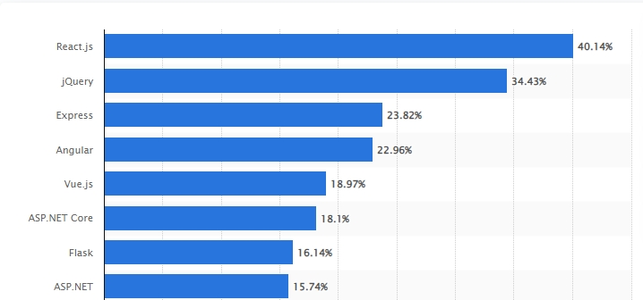

Created by Julia Mironava
Vue.js was created by Evan You, and is maintained by him and the rest of the active core team members
React maintained by Meta (formerly Facebook) and a community of individual developers and companies
Angular led by the Angular Team at Google and by a community of individuals and corporations
Most used web frameworks among developers worldwide, as of 2021 (React on the first position)
To install all of them you need to write in node.js relevan command:
All of them build on components principle, have a folder “src”.
You have data and methods in common app.vue and then export that you need in independent components.
div id='app'
header...
Main
v-bind:writeNum = 'writeNum'
v-on:plus="plus1"
v-on:minus="minus1"
/>
footer...
{{writeNum}}
Vue changes a DOM. Each component have template, script, style in one place: …vue
Pluses:
+ For small projects fast and easy
+ Without rerendering the whole DOM
+ Very fast to update related components and track data the updates
+ When you read common vue you already understand how it has to work
Minuses:
- Small support
- Each component has its watcher (can be mistakes in rendering)
- Difficult for big projects
The main trouble for me was to understand that you have to change the Dom buy useState(startparam) principle, there you have a parameter and function
function App() {
let [writeNum, setNum] = useState(0);
function plusBtn() {
setNum(writeNum+=1);
}
function minusBtn() {
setNum(writeNum-=1);
}
return (
Counter
MainSection num = {writeNum}
plusClick = {plusBtn} minusClick = {minusBtn}/>
)
}
function MainSection (props) {
return (
{props.num}
)
}
export default MainSection
Pluses:
+ Virtual DOM only re-renders the actual components that were manipulated
+ JSX syntax can co-exist within the ReactJS code and processed correctly
+ Parameters find each other like objects with keys and properties
+ Each ReactJS component has its own controls and logic
+ Components can be reused
+ Parent data cannot be affected by changes in child elements
Minuses:
- Еhe syntax is different to compare with JS.
- Has One-Way Data Flow
- You can not use pseudo-classes (:hover...)
Anugal is based on TypeScript, and you have to know how to write the typisation of data before starting work on it. For each component you need to create a folder with html, scss(sass), ts and even testing(which you can delete if you don’t need). Angular CLI is dynamic for Dom and applications could be rendered outside the browser. RxJS is a library commonly used with Angular to handle asynchronous data calls.
Everythin in Angulare cames to app-root:
{{data}}
{{writeNum}}
Dependency injection made components more reusable, easier to manage and test, components having their hierarchy. Components from their dependencies can run them parallel to each other.
Each component has own style (I choose scss), ts file with class and methods:
import { Component, Input, OnInit } from '@angular/core';
@Component({
selector: 'app-main',
templateUrl: './main.component.html',
styleUrls: ['./main.component.scss']
})
export class MainComponent implements OnInit {
writeNum: number = 0;
plusBtn() {
this.writeNum++;
}
minusBtn() {
this.writeNum--;
}
}
Pluses:
This is the framework of classes where you export classes with methods.
Classes don’t have dependencies in themselves but consume them from the external source.
Then you create a component all dependencies inside it written automatically.
Syntaksis is very easy: for data you choose [data], for listeners (click) = 'plusBtn();' squares.
Minuses:
If you onboard new developers familiar with JavaScript to learn and use new Angular,
they will be challenged compared to similar React or Vue onboarding. The array of topics and aspects
to be covered is large: modules, dependency injection that we mentioned before, components, services,
templates, etc.
But if you need a good easy architecture project for a long term you have to do it on Angular.
If you have a big project or work in team
to make it easy for adaptation of the most efficient and accurate development process
you need use framework!
Thank you for attention